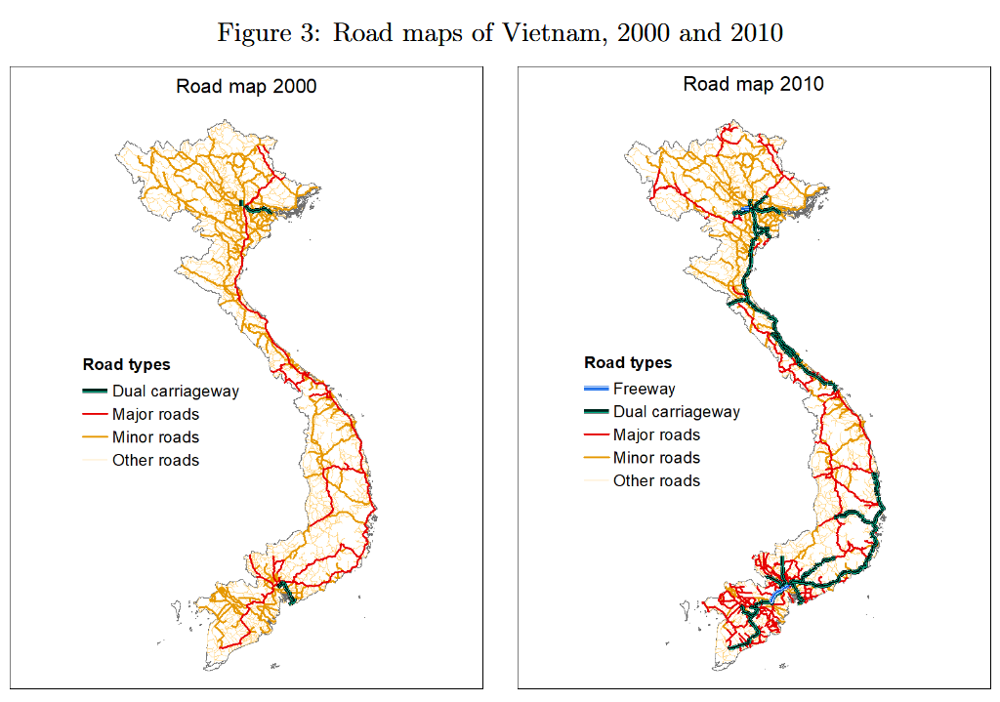

# World Map filtered for Vietnam
sf.vietnam <- world %>%
filter(name_long == "Vietnam")
# Empty Vietnam Map, sanity check
ggplot() +
geom_sf(data=sf.vietnam)
Goal : Recreate Figure 3: Vietnam’s Road Infrastructure by Road Type, from the paper:
Attached is the figure we are attempting to replicate:

Below is a blank map of Vietnam, filtered from the ‘world’ dataset from the spData library, which uses WRS 84 coding for its CRS (projection type). Thus, we need to make sure our road data sets match this projection type (or we change Vietnam to their projection type).
# World Map filtered for Vietnam
sf.vietnam <- world %>%
filter(name_long == "Vietnam")
# Empty Vietnam Map, sanity check
ggplot() +
geom_sf(data=sf.vietnam)
roads <- st_read("VNM_rds/VNM_roads.shp")Reading layer `VNM_roads' from data source
`C:\Users\T14\7Programming\R\class\geospatial\problem_sets\01ps\VNM_rds\VNM_roads.shp'
using driver `ESRI Shapefile'
Simple feature collection with 2202 features and 5 fields
Geometry type: MULTILINESTRING
Dimension: XY
Bounding box: xmin: 102.148 ymin: 8.754806 xmax: 109.4036 ymax: 23.36831
Geodetic CRS: WGS 84Note that the DIVA data matches our Vietnam map CRS, both using WGS 84. Hence, we do not need to worry about homogenizing our projection types.
# Check for available road types in data
roads %>%
pull(RTT_DESCRI) %>%
unique()[1] NA "Secondary Route" "Primary Route" "Unknown" We see that the only road types this data set provides are the following:
We will map these to the following, in respective order:
We are unable to include Dual Carriageways as in the 2000 figure, however, this decision is justified since there is very little Dual Carriageways in this figure to begin with; further, it is very difficult to find any road data on Vietnam in the first place, let alone across different time periods. Thus, Dual Carriageways is excluded for sake of best replicating the 2000 map with available data.
# Intersection of roads (lines) {first argument, important!} with Vietnam (polygon) to clip any overlapping roads
sf.vietroads2 <- st_intersection(roads, sf.vietnam)
# Rename labels to match graphic, declare road type as factor variable
sf.vietroads2 <- sf.vietroads2 %>%
mutate(RTT_DESCRI = ifelse(RTT_DESCRI == "Unknown" | is.na(RTT_DESCRI), "Other", RTT_DESCRI)) %>%
mutate(RTT_DESCRI = factor(RTT_DESCRI, levels = c("Primary Route",
"Secondary Route",
"Other"),
labels = c("Major Roads", "Minor Roads", "Other Roads")))
# sanity check
levels(sf.vietroads2$RTT_DESCRI)[1] "Major Roads" "Minor Roads" "Other Roads"# set line widths & colors to match graphic
line_widths <- c(0.55,
0.405,
0.35)
color_palette <- c("red",
"darkgoldenrod2",
"khaki2")
# plot, store
p1 <- ggplot() +
geom_sf(data=sf.vietnam, fill="white") +
geom_sf(data=sf.vietroads2,
aes(color = RTT_DESCRI,
linewidth = RTT_DESCRI),
key_glyph = draw_key_path) +
scale_color_manual(values = color_palette,
name = "Road Types") +
scale_linewidth_manual(values = line_widths,
name = "Road Types") +
theme_minimal() +
labs(title = "Road Map 2000")
p1
# clear environment (lots of memory stored)
rm(sf.vietroads2)Thanks to OpenSourceMap community for contributing to the immense dataset that made this map possible. Reference to documentation can be found here.
# Read in data
sf.viet_osm <- st_read("viet_osm.shp/gis_osm_roads_free_1.shp")Reading layer `gis_osm_roads_free_1' from data source
`C:\Users\T14\7Programming\R\class\geospatial\problem_sets\01ps\viet_osm.shp\gis_osm_roads_free_1.shp'
using driver `ESRI Shapefile'
Simple feature collection with 3086863 features and 10 fields
Geometry type: LINESTRING
Dimension: XY
Bounding box: xmin: 102.1097 ymin: 8.42197 xmax: 114.3563 ymax: 23.39969
Geodetic CRS: WGS 84Note that the OSM data also matches our Vietnam map CRS, both using WGS 84. Hence, we do not need to worry about homogenizing our projection types.
# Check all possible road types
sf.viet_osm %>%
pull(fclass) %>%
unique() [1] "footway" "residential" "primary" "tertiary"
[5] "primary_link" "secondary" "trunk" "service"
[9] "motorway" "motorway_link" "unclassified" "path"
[13] "pedestrian" "track" "steps" "living_street"
[17] "trunk_link" "cycleway" "secondary_link" "tertiary_link"
[21] "track_grade1" "track_grade5" "track_grade4" "track_grade3"
[25] "unknown" "track_grade2" "busway" "bridleway" As we can see, this dataset contains many more possible road types than our previous one. Thus, we will use this dataset to try and replicate the 2010 plot more closely.
To replicate 2010, we need the following road types:
After referencing the OpenStreetMap wiki for documentation, it seems like the closest matches to these types are the following, in order:
| Motorway | “Expressways or freeways…” |
| Trunk | “Large main roads leading to big cites, or the largest arterial roads inside a big city (but not motorways), often with multiple lanes… National Routes.” |
| Primary | “Main arterial roads in cities… Smaller national routes, connecting smaller provinces or two provinces only…” |
| Secondary | “Main roads in one district, or roads connecting one or two urban districts together, and NOT the main arterial of that city. Provincial Routes.” |
| Tertiary | “The only one main road connecting a commune to the other… One road that connects several residential roads together.” |
sf.viet_osm1 <- sf.viet_osm %>%
filter(fclass %in% c("motorway", # Freeway
"trunk", "trunk_link", # Dual-Carriageway
"primary", # Major
"secondary", # Minor
"tertiary")) %>% # Other
mutate(fclass = factor(fclass,
levels = c("tertiary", "secondary", "primary",
"trunk_link", "trunk", "motorway"),
labels = c("Other Roads", "Minor Roads", "Major Roads",
"Dual Carriageway", "Dual Carriageway", "Freeway")))
# sanity check
levels(sf.viet_osm1$fclass)[1] "Other Roads" "Minor Roads" "Major Roads" "Dual Carriageway"
[5] "Freeway" sf.viet_roads_osm1 <- st_intersection(sf.viet_osm1, sf.vietnam)
color_palette <- c("khaki2",
"darkgoldenrod2",
"red",
"forestgreen",
"blue")
line_widths <- c(0.485, 0.55, 0.55, 0.75, 0.95)
p0 <- ggplot() +
geom_sf(data=sf.vietnam) +
geom_sf(data=sf.viet_roads_osm1,
aes(color = fclass,
linewidth = fclass),
key_glyph = draw_key_path) +
scale_color_manual(values = color_palette,
name = "Road Types") +
scale_linewidth_manual(values = line_widths,
name = "Road Types") +
theme_minimal()
rm(sf.viet_roads_osm1)
rm(sf.viet_osm1)
p0
Our initial graph looks overcrowded, and it seems like the most accurate 1:1 replication strategy is changing:
I.e. moving all our road types down a level.
sf.viet_osm2 <- sf.viet_osm %>%
filter(fclass %in% c("motorway", # Dual
"trunk", "trunk_link", # Major
"primary", # Minor
"secondary")) %>% # Other
mutate(fclass = factor(fclass,
levels = c("motorway", "trunk", "trunk_link",
"primary", "secondary"),
labels = c("Dual Carriageway", "Major Roads", "Minor Roads",
"Minor Roads", "Other Roads")))
rm(sf.viet_osm)
# sanity check
levels(sf.viet_osm2$fclass)[1] "Dual Carriageway" "Major Roads" "Minor Roads" "Other Roads" sf.viet_roads_osm2 <- st_intersection(sf.viet_osm2, sf.vietnam)
color_palette1 <- c("forestgreen",
"red",
"darkgoldenrod2",
"khaki2")
line_widths1 <- c(0.95,
0.505,
0.505,
0.485)
p2 <- ggplot() +
geom_sf(data=sf.vietnam, fill="white") +
geom_sf(data=sf.viet_roads_osm2,
aes(color = fclass,
linewidth = fclass),
key_glyph = draw_key_path) +
scale_color_manual(values = color_palette1,
name = "Road Types") +
scale_linewidth_manual(values = line_widths1,
name = "Road Types") +
theme_minimal() +
labs(title = "Road Map 2010")
p2
Our resulting graph looks much more similar to our 2010 figure than it did before; thus, we are done with our plots. All thats left is some cleaning of the actual figures themselves to match formatting with the figures from the paper.
Replicated results:
# Adust plots to match outline, remove gridlines, axis ticks, etc.
p1 <- p1 +
theme(
plot.background = element_rect(color = "black", fill = NA, linewidth = 0.8),
panel.grid.major = element_blank(),
panel.grid.minor = element_blank(),
axis.text = element_blank(),
axis.ticks = element_blank(),
axis.title = element_blank(),
legend.key = element_rect(fill = NA, color = NA),
legend.background = element_blank(),
legend.text = element_text(size = 7),
legend.title = element_text(size = 8, face = "bold"),
legend.key.size = unit(0.5, "cm"),
plot.title = element_text(size = 9, margin = margin(b = 10), hjust = 1.5),
)
p2 <- p2 +
theme(
plot.background = element_rect(color = "black", fill = NA, linewidth = 0.8),
panel.grid.major = element_blank(),
panel.grid.minor = element_blank(),
axis.text = element_blank(),
axis.ticks = element_blank(),
axis.title = element_blank(),
legend.key = element_rect(fill = NA, color = NA),
legend.background = element_blank(),
legend.text = element_text(size = 7),
legend.title = element_text(size = 8, face = "bold"),
legend.key.size = unit(0.5, "cm"),
plot.title = element_text(size = 9, margin = margin(b = 10), hjust = 1.5),
)
# final results: side by side
p1 + p2
Original figure:
We notice that the graphs seems to look quite similar, although not exact 1:1 replications. This is to be expected for a couple of reasons:
The figures were not generated from pre-existing data sources like gROADS or DIVA – rather, the author Badboni generated her figure manually by, quote:
Detailed data on Vietnam road types is not widely available. There exists road data, but the roads are not always labeled precisely; further, even when there is existing data with plenty of labels for the road types, the data is much more recent (OSM, for example); thus, it will not match with road structure from 2000 or 2010 1:1, which is to be expected.
That being said, we’re quite happy with the results in lieu of access to the generated data.